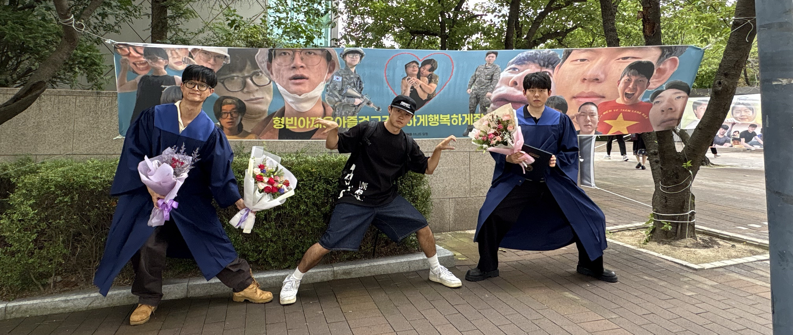

환경오염
졸업식 현수막 제작 문화는 서로의 정을 느낄 수 있는 몇 안되는 이벤트입니다.
하지만 한 편으로 잠깐의 기분과 사진을 남기기 위해 가로 5m, 세로 90cm의 쓰레기를 생산하는 것은 개인적으로는 불편했습니다.
그러니 우리 데이터 쪼가리로 남깁시다. 저장하고 간직하도록
졸업식이란
진정한 사회인으로서의 발돋움이다.
업데이트 예정
릴리즈 목표 : 2026년 2월 16일 *졸업식 언젠지 잘모름
핵심 기능
- 익명 사용자 축하글 작성 기능
- 관리자의 게시글 수정/삭제
- 축하글 일괄 다운로드 기능